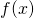

The Euler formula states that for any real x:
Where i is the imaginary unit. This formula is extremely important in many branches of mathematics and engineering, but at first glance it's puzzling. What does a complex exponent even mean, and how can it be related to the trigonometric functions?
Complex number representations
Complex numbers have two canonical representations:

- Cartesian:
- Polar:
Trigonometric formulae can be used to convert between the two in a straightforward way:
- Given , we can compute and
- Given we can compute and
Some intuition for Euler's formula
Representing x and y as above, we have:
Now, let's take two complex numbers, multiply them together and use some basic trigonometric identities:
When multiplying two complex numbers in polar form, their magnitudes multiply but their angles add [1].
Now, suppose we have a hypothetical function such that represents a complex number. We've just shown that:
What real-life function do you know that behaves like this? An exponential function! for some a. This isn't a proof of anything, of course, and the base of the exponent can be arbitrary - but it does show that there's something about complex numbers that behaves like exponentials.
Let's look at it from another direction. Once again starting with:
We'll treat z as a function of  , and find its derivative:
, and find its derivative:
If we factor i out of the parenthesis, we get:
Note that this is exactly the derivative if , another clue that complex numbers behave like exponential functions.
Proof using power series
The canonical proof of Euler's formula uses Maclaurin series expansions for , and .
As a reminder, the Maclaurin series approximation for a function  is:
For :
Substituting for x and applying powers of i:
Now let's regroup the real and imaginary parts of the series:
The contents of the first parenthesis is precisely the Maclaurin series expansion of , and the contents of the second parenthesis is the expansion of ; therefore, we've just proven the Euler formula [2].
Proof using derivatives
Let's define as follows:
And compute its derivative:
Thus, it's a constant function; what is its value? We can find easily - it's 1. Therefore, everywhere and thus its numerator and denominator are always equal .
Visualizing Euler's formula
It's interesting to plot to observe its behavior. In the general case, it's very difficult to visualize functions in the complex domain because both the input and output are two-dimensional; so we'd need a 4D plot. Luckily for us, we're usually interested in only for , so we have 3 dimensions to deal with:
- Input dimension:
- Output dimensions: and
If we isolate the two 2D plots of as a function of , we get:
This is the expected result from Euler's formula! The real part of the complex exponent is , while the imaginary part is .
Finally, let's plot the projection of the 3D plot onto the real+imaginary axes:
It hopefully comes as no surprise that we get the unit circle! This is another way to demonstrate the beautiful connection between the trigonometric functions and circles. If you imagine a point moving along the unit circle counter-clockwise, this point's Re value will be where is its angle from the Re axis, and its Im value will be .
Euler's identity
Euler's famous identity ties the "five fundamental constants of mathematics" together:
This identity is trivial to derive from the Euler formula, because:
De Moivre formula
Let's take the complex exponent and raise it to the n-th power, where n is an integer:
We can replace the complex exponent by its trigonometric equivalent using Euler's formula on both sides:
This is De Moivre's Formula, which is extremely useful in calculations involving complex numbers, and is a treasure trove of trigonometric identities.
An alternative formulation of the De Moivre formula uses fractional powers and is useful for finding the roots of complex numbers. However, we have to be careful here, because the complex root function (just like its real counterpart!) is multi-valued; it maps a single value in its domain to potentially multiple values in its range [3].
This formulation says:
For integer . This is because if we raise this number back to the power of n, we'll get back the original for any of these k (both sine and cosine are periodic with a period of ).
| [1] | In other words, multiplying by a complex number combines a
scaling and rotation operations. Multiplying any z by
scales (multiplies) z's magnitude by
r and rotates it (counter-clockwise) by angle . |
| [2] | I've seen places that treat this as the definition of what a complex exponential means, rather than a proof. |
| [3] | And thus isn't strictly a function at all, if we want to put our abstract algebra hat on. |